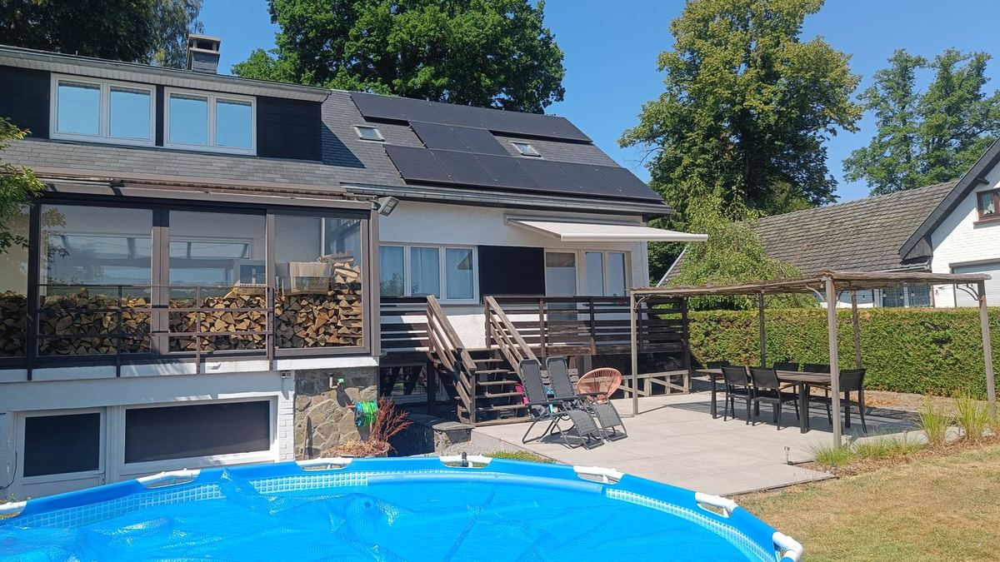

Virage 02 · Raidillon
La voiture reste devant la maison
Le samedi et le dimanche, c'est bouchon assuré autour du circuit : mieux vaut la laisser là et rejoindre l'entrée à vélo, puis la Fan Zone à pied.
Départ d'ici, à vélo. Les vélos ne sont pas fournis ; le garage permet de les ranger.
Jusqu'à l'entrée Blanchimont, où les vélos restent la journée.
De l'entrée Blanchimont à la Fan Zone.
Virage 03 · Les Combes
Ce qu'il y a dans la maison
Rien n'est partagé pendant votre séjour : les pièces que nous ne louons pas restent fermées à clé.
- 2 chambresun lit double, un lit simple avec lit tiroir si besoin, linge fourni
- Salle de bainbaignoire et douche à l'italienne, draps de bain fournis
- Deux WCun au rez-de-chaussée, un au premier
- Cuisine équipéeîlot central, plaque induction, four, micro-ondes, machine à café, bouilloire
- Grand séjourdeux canapés, télévision, poêle à bois
- Terrasse et jardinpergola, transats, piscine hors sol l'été
- Wi-Fidans toute la maison, code donné à l'arrivée
- Parkingdevant la maison, garage pour les vélos
- En famillechaise haute, lit parapluie et lit enfant sur demande

profitez du calme de la région.
Virage 04 · Pouhon
La visite
Neuf photos de la maison, du séjour au jardin. Ouvrez-en une pour l'agrandir.
Virage 05 · Blanchimont
Nos bonnes adresses
Ouvrez une catégorie : le nom du lieu ouvre Google Maps, la pastille donne le trajet depuis la maison et « Voir + » affiche les horaires et les contacts.
Envie de marcher ? Énormément de promenades tout autour : Ster, Coo, la vallée de l'Amblève, les Fagnes. Demandez-nous si vous voulez des itinéraires précis.
Ligne d'arrivée
Écrivez-nous vos dates
Nous répondons dans la journée. Le week-end du Grand Prix part plusieurs mois à l'avance ; le reste de l'année, la maison se loue aussi au calme.